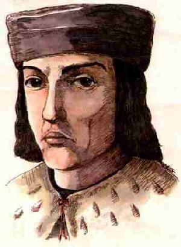
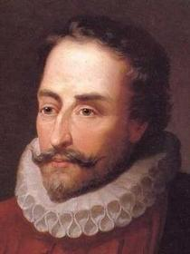
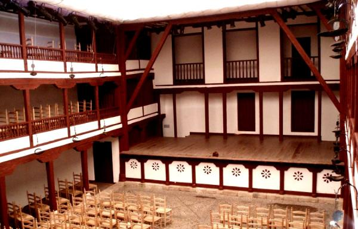
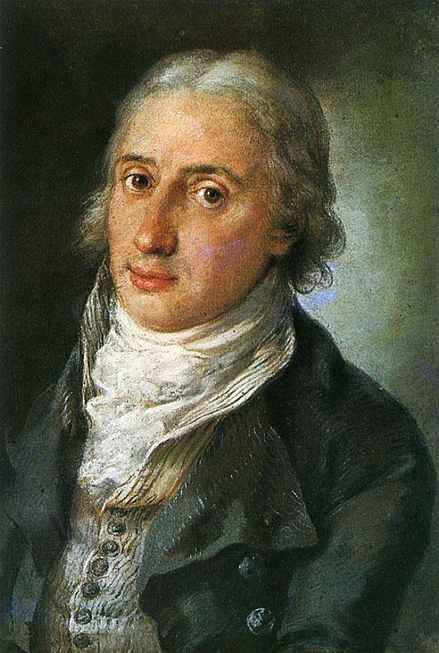

Inicios
EL TEATRO MEDIEVAL
El teatro español, como el europeo, surge vinculado al culto religioso. La misa, celebración litúrgica central en la religión cristiana, es en sí misma un ‘drama’, una representación de la muerte y resurrección de Cristo. Serán los clérigos
los que, en su afán didáctico por explicar los misterios de la fe a los fieles mayoritariamente incultos y analfabetos, creen los primeros diálogos teatrales: los tropos, con los que escenificaban algunos episodios relevantes de la Biblia.
Estas representaciones, que tenían lugar dentro de las iglesias, en el coro o parte central de la nave, se fueron haciendo más largas y espectaculares dando lugar a un tipo de teatro religioso que fue el teatro medieval por excelencia. Poco a
poco se fueron añadiendo elementos profanos y cómicos a este tipo de representaciones que, por razones de decoro, terminaron por abandonar las iglesias y comenzaron a realizarse en lugares públicos: en los pórticos y atrios de las iglesias,
plazas, calles y cementerios.
En España se conservan muy pocos documentos escritos y menos obras teatrales de estos siglos. La muestra más antigua de teatro castellano es el Auto de los Reyes Magos de finales del siglo XII, escrito en romance y probablemente de origen
franco. Pero puede decirse que hasta el siglo XV no empezó a cultivarse como tal el género, con Juan del Encina, Lucas Fernández y Jorge Manrique, si se exceptúan los juegos juglarescos populares.

Jorge Manrique
EL SIGLO XVI
Los parámetros medievales seguirán siendo la clave del teatro español hasta que, en el siglo XVI, se inicia el camino de la modernización que culminará en la creación de un género: la comedia nueva del siglo XVII. El siglo XVI es, por tanto,
un momento de búsqueda y convivencia de varias tendencias: la dramaturgia religiosa (Gil Vicente), el clasicismo (Juan de la Cueva), los italianizantes (Juan del Encina, Bartolomé Torres Naharro) y la tradición nacionalista (Juan de la Cueva).
La obra dramática más importante de este período es La Celestina de Fernando de Rojas. En realidad es una comedia humanista, hecha más para la lectura y reflexión que para la escena. Se trata de una obra excepcional, magnífico retrato de la
época y modelo de la literatura galante posterior. Es, sin embargo, una obra de tan complicada estructura dramática (alrededor de 20 actos) que no fue representada en su época y que sigue teniendo enormes dificultades para su puesta en escena.

Juan de la Cueva
EL SIGLO DE ORO
El siglo XVII es el siglo de oro del teatro en España. Es un momento en el que las circunstancias sociales y políticas determinan una situación excepcional: la representación pública se convierte en el eje de la moral y la estética. Las
‘apariencias’ son fundamentales. El mundo es un gran teatro y el teatro es el arte más adecuado para representar la vida. Se crean las primeras salas teatrales llamadas corrales de comedias, que eran gestionadas por las Hermandades, verdaderos
precedentes del empresario teatral moderno.
Van a proliferar los autores, las obras y las compañías. El teatro deja de ser un acontecimiento restringido para convertirse en un producto competitivo, sujeto a las leyes de la oferta y la demanda. Un interesante debate teórico acompaña el
nacimiento y desarrollo de esta forma nueva de entender el teatro. Dos autores de la época nos sirven para ilustrar el sentido y la evolución de este debate y del arte teatral: Cervantes y Lope de Vega.

Corral de comedia
LA ILUSTRACIÓN
El siglo XVIII estuvo marcado en España, por primera vez, por la intervención del Estado en la orientación teatral del país. Bajo el influjo de las ideas de la Ilustración, se creó un movimiento de reforma de los teatros de Madrid, encabezado
por Leandro Fernández de Moratín. El cometido principal de este movimiento era recomendar una serie de obras y prohibir otras, bajo la premisa de fomentar exclusivamente ideas que amparasen la verdad y la virtud, apoyando las representaciones
que supusieran enseñanza moral o adoctrinamiento cultural. Entre las obras prohibidas figuraban algunas del siglo de oro, pero sobre todo se censuraba a aquellos autores contemporáneos que insistían en la fórmula del siglo anterior. Es preciso
señalar que, pese a la censura ejercida, los objetivos de la reforma tenían tintes que hoy llamaríamos progresistas. El estado de la comedia española era francamente deplorable, cumplida cuenta de ello dio Moratín en La comedia nueva o el café
(1792), contundente ataque contra los excesos del posbarroquismo.

Fernández de Moratín
EL MOVIMIENTO ROMÁNTICO
El romanticismo español no pasa de ser un movimiento arrebatado, con apenas quince años de presencia en el teatro. Sin duda la guerra de la Independencia y el posterior absolutismo de Fernando VII retrasaron la aparición de un movimiento que,
como es sabido, tenía tintes altamente revolucionarios. No obstante, podemos decir que los románticos españoles coinciden, en sus grandes directrices, con los alemanes y franceses: afán de transgresión, que explica las frecuentes mezclas de lo
trágico y lo cómico, el verso y la prosa, tan denostadas por los neoclásicos; abandono de las tres unidades; especial atención a temáticas que giran en torno al amor, un amor imposible y platónico con el telón de fondo de la historia y la
leyenda y abundantes referencias a los abusos e injusticias del poder; unos héroes misteriosos, cercanos al mito, abocados a muertes trágicas pero siempre fieles a su motivo amoroso o heroico. En este sentido, el héroe romántico por excelencia
es el protagonista del Don Juan Tenorio de Zorrilla.
Drama
Comedia
Musical
Clásico